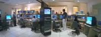
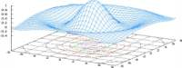

What do I know ?
What does Mathieu know? This question can be divided between the things I have learned though my university education and the things I have learned about during my spare time.
Formal Education
From 1999 to 2003, I have attended classes at the University of Ottawa. During those four and a half years, I have acquired a baccalaureate of applied sciences in computer engineering. I also had the chance of participating in the cooperative education program: this allowed me to gain work experience as I was studying. I graduated on december 2003 with High Honors.
Overview of Classes
My studies at the University of Ottawa touched a wide array of disciplines. Following are a few of those classes and what they have given me.
Electronics and computer design. Analog and digital circuit design. Integrated chips design and programmation. Systems design and robotics. If it uses current, I've probably worked with it.
Programming classes. From C++ and Java to data structures and finishing with software design, I have learned a great deal about the workings of software.
Signals and communications. I have taken a wide range of information theory classes such as telecommunications, digital signal processing and image processing classes.
A solid math background. I have followed, during my years at ottawa, a wide range of mathematical classes ranging from calculus and statistics to equation differentiation and complex analysis.
Good sciences base. Like all engineers, I have basic knowledge of chemistry and physics that allow me easily find what I need to know when my own knowledge is insufficient.
Work experience. Participation to my university's cooperative teaching program allowed me to gain work experience as I was attending school.
Programming Languages
My university and personal studies coupled with my work experience exposed me to a variety of programming languages.
VHDL: Though I learned VHDL in my VLSI class, I only really because comfortable with it from participation to my 4th year university project: YARE.
Java: A few Java classes as well as involvement in the iRATE Radio open source project made me an efficient Java programmer.
C/C++: I was introduced to C/C++ programming through my university's CSI classes. I am currently working on a GTK+ project to further my knowledge of C.
HT/HP Basic: Having already leaned BASIC at a young age, I had no problem adapting to HT/HP Basic for my work at NavCanada.
Visual Basic: Programming language learned in high school. I use it from time to time when I need a quick-and-dirty program.
UnrealScript: The Unreal Engine programming language. I was exposed to this language through my work for Tactical-Ops and Damnation.
Perl: A simple and powerful scripting language that I use whenever I need a script under Linux.
Assembler: Used thorough a few of my computer engineering classes. I have used it to program on Intel 8085 and Motorola 68HC12 processors and micro-controllers. I also programmed assembler for the PIC12F675 of my Xbox Remote Add-on.
MATLAB: Not really a programming language, but I will list it here anyway. I used this tool extensively through my 4 years of university studies. My robotics project was written entirely with MATLAB.
Detailed Listing of Classes
For reference, here is a complete listing of the classes I attended to at the University of Ottawa:
-

- Electronics and Computer Design
- Circuit Theory I
- Circuit Theory II
- Analog Electronics
- Digital Electronics
- Computer Architecture I
- Computer Architecture II
- Computer Architecture III
- Principles and Applications of VLSI Design (VHDL)
- Robotic Computer Control
- Computer Systems Design Project
- Programming and Software Theory
- Introduction to Electrical and Computer Engineering (C++)
- Concepts of Software Design (Java)
- Data Structures
- C++ Laboratory
- Theory of Programming Languages (Scheme)
- Principles of Operating Systems
- Introduction to Software Engineering
- Signals and Communications
- Signals and Systems Analysis
- Introduction to Control Systems
- Introduction to Telecommunication Systems
- Computer Networks and Interconnections
- Digital Signal Processing
- Digital Image Processing

- Mathematics
- Introduction to Linear Algebra
- Differential and Integral Calculus I
- Differential and Integral Calculus II
- Differential and Integral Calculus III
- Differential Equations and Numerical Methods
- Complex Analysis and Integral Transformations
- Probability and Statistics for Engineers
- Sciences
- Principles of Chemistry
- Mechanics for Engineers
- Fundamental Principles of Physics for Engineers
- Electricity and Magnetism
- Introduction to Experimental Psychology
- Other Classes
- Technical and Scientific Writing
- Technology, Society and Environment since 1800
- Greek Mythology
- Professional Engineering Practice
- Introduction to Management Science

Personal Studies
Linux: A few years ago I started experimenting with the free operating system GNU/Linux. Back then, my roommate and I were using it as an internet gateway. Since then I have been exploring the Debian distributions. Initially I was using it on a second computer to experiment with. Now both my workstation and my server are running the Debian distribution.
Perl: As a side-effect of using Linux, I started learning Perl. Perl is a very developed scripting language that uses a C++/Java-like syntax. Whenever I need to write a script to do anything from DNS updates to mass file renaming, I turn to Perl.
UnrealScript and UnrealEd: In the summer of 2000, I started experimenting with the UnrealEd map editing software. My initial goal was to create an online replica of my university campus. As I was getting more knowledgeable with the editor, I started to learn the UnrealScript programming language used in Unreal games. Around that time I got involved with the Tactical-Ops team, eventually producing code and maps that would be used in a retail game.